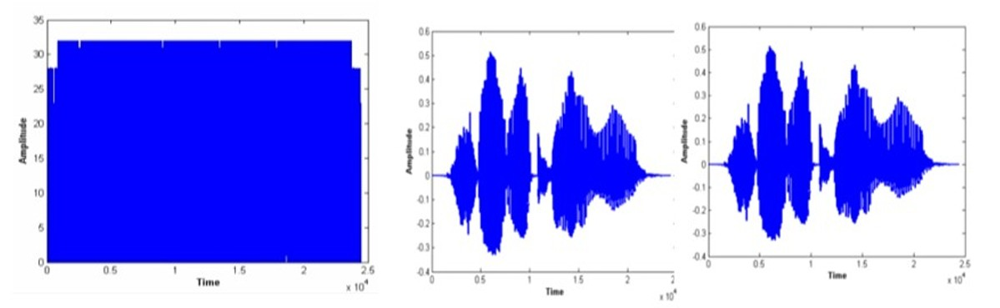

Performance Analysis of RSA Algorithm for Audio Data Security in Communication Networks.

In this research work, I implemented the application of the well-known RSA algorithm for audio data encryption and decryption. The performance of the presented algorithm has been tested via experimental implementation using Matlab simulations. The results on the presented technique validated that it is secure, reliable and efficient to be applied in secure audio communications as well as it performed high intelligibility of the recovered audio signal.